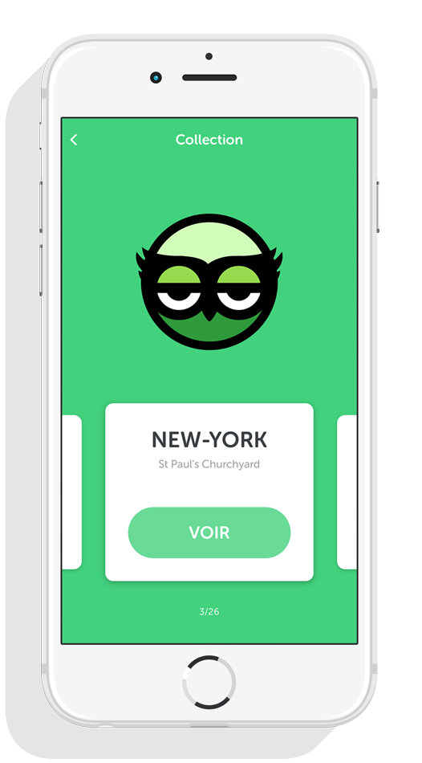

Owlook
Application mobile
Owlook est une application mobile conçue pour iPhone 5S, elle permet de découvrir une ville sous un autre angle et de façon ludique.
L’application propose aux utilisateurs souhaitant visiter une ville de partir à la recherche de petits hiboux dispersés à différents endroits remarquables de la ville. L’utilisateur, guidé par sa carte, va devoir se rendre à un point précis pour commencer à rechercher le hibou grâce à la caméra de son téléphone. Une fois le hibou trouvé il suffit de l’attraper, en appuyant dessus, pour percevoir ce que l’oiseau peut observer d’où il est perché. Grâce à un panoramique aérien le visiteur peut découvrir le lieu où il se trouve d’un point de vue totalement différent de celui d’un piéton.


